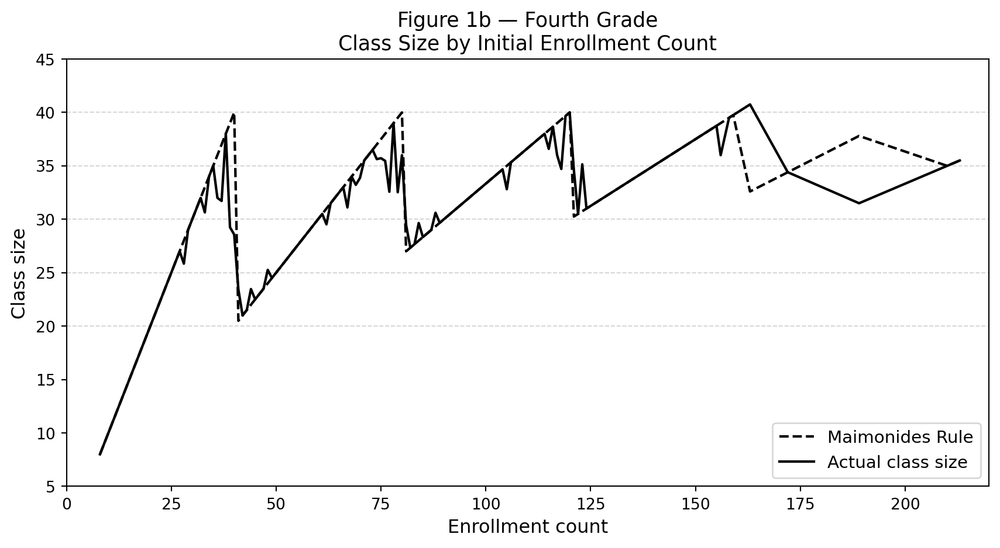
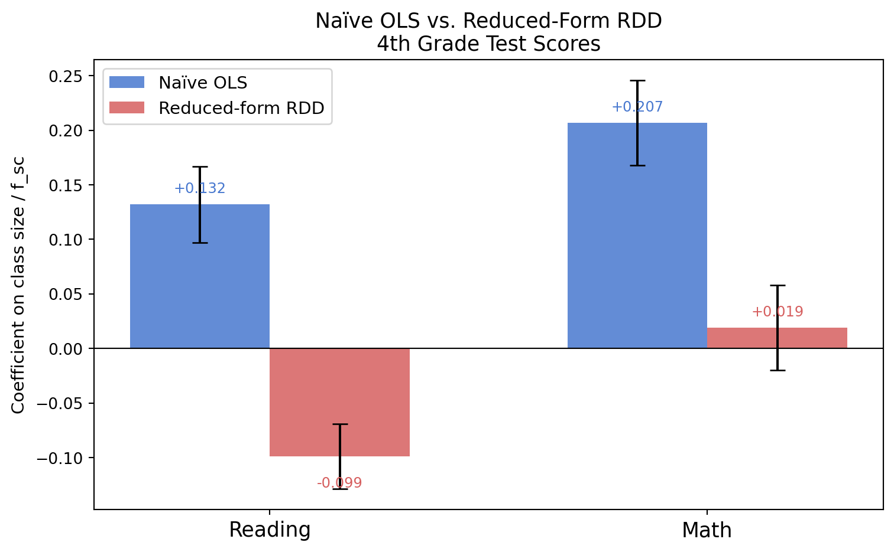

USING MAIMONIDES’ RULE TO ESTIMATE THE EFFECT OF CLASS SIZE ON SCHOLASTIC ACHIEVEMENT*
Author
Dongjun Wang
Published
April 22, 2026
Introduction
Does reducing class size improve student achievement? This question sits at the heart of education policy debates worldwide, yet answering it rigorously is surprisingly hard. The core problem is selection bias: schools that have smaller classes are often also richer, better-resourced, and serve students from more advantaged backgrounds. A simple comparison of test scores across class sizes will conflate the effect of class size with all these other differences — yielding what researchers call a naïve or biased estimate.
In their landmark 1999 paper, Joshua Angrist and Victor Lavy tackle this problem using a clever natural experiment rooted in Israeli law. They study how class size affects test scores for 4th and 5th graders in Israeli public schools, using data from 1991.
The Key Insight: Maimonides’ Rule
Israeli education law caps class size at 40 students. This means that when a school cohort reaches 41 students, it must be split into two classes. At 81 students, it splits into three, and so on. This rule — which dates back to the 12th-century rabbi Maimonides — creates a precise mathematical formula for the maximum allowable class size based purely on enrollment:
This formula generates sharp discontinuities in predicted class size at enrollment counts of 40, 80, 120, 160, and 200. Just below each threshold a cohort stays in larger classes; just above it gets split into smaller ones. Crucially, whether a school happens to have 40 vs. 41 students — or 80 vs. 81 — is largely arbitrary from the student’s perspective. This quasi-random assignment around the cutoff is what makes the rule a valid instrument for class size, and what enables Angrist and Lavy to draw causal conclusions about the effect of class size on learning.
The paper’s strategy has two stages. First, they show that Maimonides’ Rule strongly predicts actual class size. Second, they use the rule as a source of exogenous variation to estimate the causal effect of class size on reading and math scores — the Regression Discontinuity Design (RDD) approach.
This post replicates three key results from their paper for 4th graders:
Figure 1 Panel B — showing how Maimonides’ Rule tracks actual class size
Table II, columns 7 & 10 — the naïve OLS estimates (the biased baseline)
Table III Panel A, columns 7, 9, & 11 — the reduced-form RDD estimates
We then compare the naïve and reduced-form results and explain what changed — and why it matters.
Setup
Show code
import pandas as pdimport numpy as npimport matplotlib.pyplot as pltimport matplotlib.ticker as tickerfrom IPython.display import display# ── Load data ──────────────────────────────────────────────────────────────────# Update this path to wherever final4.dta lives on your machinedf = pd.read_stata("/home/jovyan/Desktop/quarto_website/final4.dta")# Compute Maimonides' Rule predicted class sizedf["fsc"] = df["cohsize"] / (np.floor((df["cohsize"] -1) /40) +1)# Restrict to enrollment <= 220 (replicates paper's sample of ~2,049 observations)df = df[df["cohsize"] <=220].copy()print(f"Observations: {len(df):,} | Schools: {df['schlcode'].nunique():,}")
Observations: 2,053 | Schools: 1,015
Show code
# ── OLS with cluster-robust standard errors ────────────────────────────────────# Standard errors are clustered at the school level (schlcode),# following the paper's note that SEs are "corrected for within-school# correlation between classes."def ols_clustered(y, X, clusters):""" OLS with cluster-robust (sandwich) standard errors. Returns: beta, se, rmse, R², N """ XtX_inv = np.linalg.inv(X.T @ X) beta = XtX_inv @ X.T @ y resid = y - X @ beta n, k = X.shape G =len(np.unique(clusters)) meat = np.zeros((k, k))for g in np.unique(clusters): idx = clusters == g meat += X[idx].T @ np.outer(resid[idx], resid[idx]) @ X[idx] correction = (G / (G -1)) * ((n -1) / (n - k)) # small-sample correction vcov = XtX_inv @ meat @ XtX_inv * correction se = np.sqrt(np.diag(vcov)) rmse = np.sqrt((resid @ resid) / (n - k)) r2 =1- (resid @ resid) / ((y - y.mean()) **2).sum()return beta, se, rmse, r2, n
Figure 1 Panel B — Class Size and Maimonides’ Rule (4th Grade)
The figure below replicates Panel B of Figure 1 in Angrist & Lavy (1999). For each enrollment count, we plot (i) the class size predicted by Maimonides’ Rule (dashed) and (ii) the actual average class size across all 4th-grade classes with that enrollment (solid).
Show code
# ── Aggregate to enrollment-level means ───────────────────────────────────────by_enroll = ( df.groupby("cohsize") .agg(actual=("classize", "mean"), maimonides=("fsc", "mean")) .reset_index())# ── Plot ───────────────────────────────────────────────────────────────────────fig, ax = plt.subplots(figsize=(9, 5))ax.plot(by_enroll["cohsize"], by_enroll["maimonides"],"k--", linewidth=1.6, label="Maimonides Rule")ax.plot(by_enroll["cohsize"], by_enroll["actual"],"k-", linewidth=1.6, label="Actual class size")ax.set_xlabel("Enrollment count", fontsize=12)ax.set_ylabel("Class size", fontsize=12)ax.set_title("Figure 1b — Fourth Grade\nClass Size by Initial Enrollment Count", fontsize=13)ax.set_xlim(0, 220)ax.set_ylim(5, 45)ax.yaxis.set_major_locator(ticker.MultipleLocator(5))# Dashed reference lines at y = 20, 25, 30, 35, 40 (matching the paper)for y_ref in [20, 25, 30, 35, 40]: ax.axhline(y_ref, color="lightgray", linestyle="--", linewidth=0.7, zorder=0)ax.legend(fontsize=11)plt.tight_layout()plt.show()

The figure makes the RDD strategy visible. The dashed line (Maimonides’ Rule) drops sharply at each enrollment multiple of 40 — when a cohort just crosses a threshold, predicted class size falls by roughly half. The solid line (actual average class size) closely follows this sawtooth pattern, confirming that the rule has real bite. It is this discontinuous variation in predicted class size — driven entirely by the administrative rule, not by student characteristics — that Angrist and Lavy exploit.
Table II, Columns 7 & 10 — Naïve OLS (The Biased Baseline)
Before introducing the RDD, Angrist and Lavy document what a simple OLS regression shows. They regress average class test scores on actual class size — nothing else. This is the naïve approach a researcher might try first.
Show code
# ── Run naïve OLS regressions ─────────────────────────────────────────────────naive_rows = []for yvar, label in [("avgverb", "Reading comprehension"), ("avgmath", "Math")]: sub = df.dropna(subset=[yvar, "classize"]) y = sub[yvar].values X = np.column_stack([np.ones(len(sub)), sub["classize"].values]) beta, se, rmse, r2, n = ols_clustered(y, X, sub["schlcode"].values) naive_rows.append({"Outcome": label,"Class size coef": f"{beta[1]:.3f}","(Std. error)": f"({se[1]:.3f})","Root MSE": f"{rmse:.2f}","R²": f"{r2:.3f}","N": f"{n:,}", })naive_df = pd.DataFrame(naive_rows).set_index("Outcome")display(naive_df)
Class size coef
(Std. error)
Root MSE
R²
N
Outcome
Reading comprehension
0.132
(0.035)
7.94
0.011
2,049
Math
0.207
(0.039)
8.67
0.023
2,049
Both coefficients are positive: larger classes are associated with higher test scores. This seems to contradict the idea that smaller classes help students — but it is almost certainly a product of omitted variable bias. Schools with larger enrollments tend to be in larger, more urban, wealthier towns. Those schools also tend to have higher average scores for reasons entirely unrelated to class size. The naïve OLS picks up this confounding and produces an upward-biased (and likely sign-reversed) estimate. This is exactly why we need a better identification strategy.
Table III Panel A, Columns 7, 9, & 11 — Reduced-Form RDD Estimates
Instead of regressing scores on actual class size, the reduced-form RDD regresses outcomes directly on the Maimonides’ Rule predicted class size (\(f_{sc}\)), controlling for the percent of disadvantaged students (tipuach). Because \(f_{sc}\) is determined solely by the administrative enrollment rule — not by any choice or characteristic of students or schools — this regression recovers variation in class size that is plausibly exogenous.
The results tell a very different story from the naïve OLS:
Class size responds strongly to the rule: a one-unit increase in \(f_{sc}\) raises actual class size by about 0.85 students — confirming that Maimonides’ Rule has real power as an instrument.
Reading scores now show a negative coefficient on \(f_{sc}\): larger Maimonides-predicted class sizes are associated with lower reading scores.
Math scores also shift toward a negative (or near-zero) relationship once we use exogenous variation.
Comparing Naïve OLS vs. Reduced-Form RDD
The table below places the two sets of estimates side by side for 4th-grade test scores.
# ── Visualise the contrast ─────────────────────────────────────────────────────outcomes = ["Reading", "Math"]naive_coef = [0.132, 0.207]rdd_coef = [-0.099, 0.019]naive_se = [0.035, 0.039]rdd_se = [0.030, 0.039]x = np.arange(len(outcomes))width =0.32fig, ax = plt.subplots(figsize=(8, 5))bars_naive = ax.bar(x - width /2, naive_coef, width, yerr=naive_se, capsize=5, color="#4878CF", alpha=0.85, label="Naïve OLS")bars_rdd = ax.bar(x + width /2, rdd_coef, width, yerr=rdd_se, capsize=5, color="#D65F5F", alpha=0.85, label="Reduced-form RDD")ax.axhline(0, color="black", linewidth=0.8)ax.set_xticks(x)ax.set_xticklabels(outcomes, fontsize=13)ax.set_ylabel("Coefficient on class size / f_sc", fontsize=11)ax.set_title("Naïve OLS vs. Reduced-Form RDD\n4th Grade Test Scores", fontsize=13)ax.legend(fontsize=11)# Annotate bars with valuesfor bar, val inzip(bars_naive, naive_coef): ax.text(bar.get_x() + bar.get_width() /2, val +0.008,f"{val:+.3f}", ha="center", va="bottom", fontsize=9, color="#4878CF")for bar, val inzip(bars_rdd, rdd_coef): offset =0.008if val >=0else-0.018 va ="bottom"if val >=0else"top" ax.text(bar.get_x() + bar.get_width() /2, val + offset,f"{val:+.3f}", ha="center", va=va, fontsize=9, color="#D65F5F")plt.tight_layout()plt.show()

What changed — and why it matters
The sign flip from naïve OLS to reduced-form RDD is the central lesson of this replication.
Why naïve OLS is biased. When we simply regress test scores on actual class size, we cannot separate the effect of class size from the many other things that differ between large and small classes. In Israel (as in most countries), schools with larger enrollment tend to be in larger urban areas — which tend to be wealthier — and those students tend to score higher regardless of class size. This positive correlation between school size and socioeconomic advantage creates upward bias in the naïve estimate, masking the true (negative) relationship between class size and learning.
Why RDD fixes this. Maimonides’ Rule generates sharp, rule-based jumps in class size at enrollment thresholds of 40, 80, 120, and so on. A school with 41 students is required to split into two classes of ~20; a school with 39 students keeps one class of 39. These two schools are otherwise virtually identical — they differ by two students, not by wealth, location, or student ability. By using the rule-predicted class size (\(f_{sc}\)) rather than actual class size, the RDD isolates only this quasi-random variation around the cutoffs. The resulting estimates are much closer to causal effects.
Interpreting the results. The reduced-form coefficient of −0.099 on reading comprehension means that a one-unit increase in Maimonides-predicted class size is associated with roughly a 0.1-point decrease in average reading scores. Given that actual class size responds to the rule with a coefficient of ~0.85, the implied effect of an extra student on reading is approximately −0.099 / 0.845 ≈ −0.12 points — a meaningful, though modest, negative effect. Math results are noisier and closer to zero, consistent with the paper’s finding that reading benefits more from smaller classes than math does at this grade level.
The broader point is methodological: the same data, analysed two different ways, tell opposite stories. Only by exploiting the quasi-random variation introduced by an administrative rule — and by being explicit about the assumptions that make that variation exogenous — can we move from biased correlation to credible causal inference.
References
Angrist, J. D., & Lavy, V. (1999). Using Maimonides’ Rule to Estimate the Effect of Class Size on Scholastic Achievement. The Quarterly Journal of Economics, 114(2), 533–575.